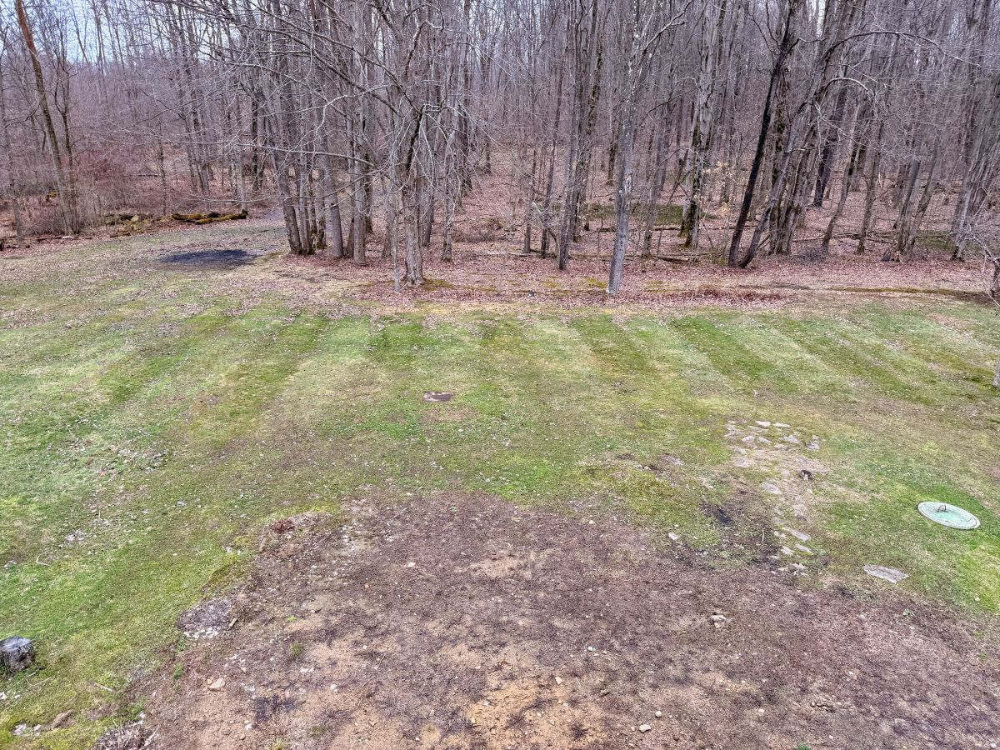

The area behind the house has seen more disruption than anything else on the property. Renovation work around the back deck left the soil exposed and compacted, a mix of glacial till and heavy clay that hasn’t been truly workable in decades. Long before that, this part of the land was an orchard. The peach trees are gone now, but three of the original apple trees still stand, along with a few younger ones planted and forgotten over the years. The soil tells the story: dense, tired, and pressed down by time.
While the long-term landscaping will take years to shape, there’s an immediate need to get grass established. Without it, every step from the yard to the deck brings mud with it — a small but constant reminder that the ground isn’t ready to support anything yet. Before seeding in late March, the soil needs a head start: aeration, light tilling, and a balanced fertilizer to begin loosening what’s been compacted for half a century.
The back left corner adds another layer to the work. For years, this was the family burn pile — mostly paper and cardboard, the kind of small-scale burning that’s still legal in this part of Pennsylvania. The ash left behind has changed the soil in ways the deck area hasn’t. Ash tends to push soil toward the alkaline side, while clay-heavy ground often leans acidic. Both areas need attention, but for different reasons. The deck side needs structure and nutrients; the burn-pile corner needs balance and organic matter to temper the ash and bring the pH back toward neutral.
For now, the simplest step is the most effective: a general 10‑10‑10 fertilizer, the same one used to feed the apple trees. It’s a way of giving both areas a baseline — a reset before the real work begins. In a few weeks, the top three inches will be tilled, leveled, and seeded. Today’s work is about preparing the ground to receive that effort.
I picked up a fifty‑pound bag of tall fescue seed, which will wait in the garage until I’m back from San Francisco. It’s a small thing, but it marks the beginning of turning this disrupted patch of earth into something usable again. Grass first, then paths, then plantings — one layer at a time, the backyard will find its shape.